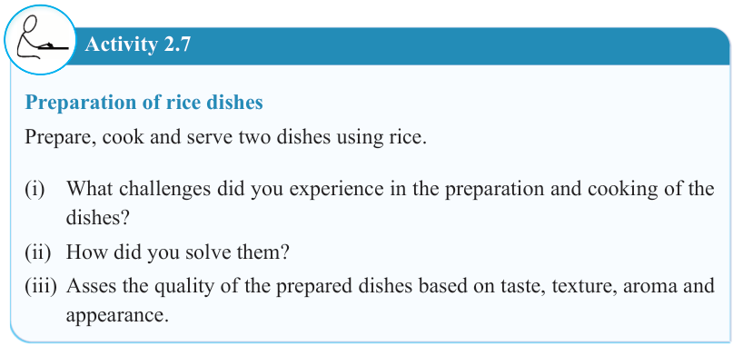
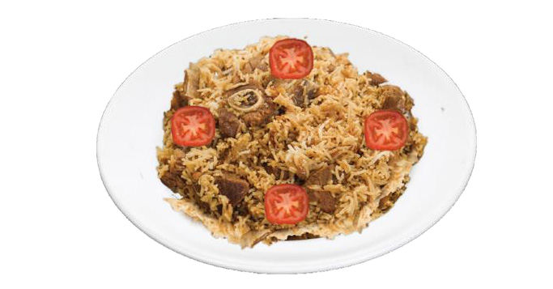

33


Food and Human Nutrition

Form Two


Figure 2.3: Meat pilau
Activity 2.7
Preparation of rice dishes
Prepare, cook and serve two dishes using rice.
(i) What challenges did you experience in the preparation and cooking of the dishes?
(ii) How did you solve them?
(iii) Asses the quality of the prepared dishes based on taste, texture, aroma and appearance.
Vegetable rice
Ingredients (serve 2 people)
250 g rice 1 carrot
50 g green peas 30 ml cooking oil
2 g salt 1 onion water
Method
1. Clean the rice to remove unwanted materials and wash it.
2. Peel the carrot and cut it into small cubes.
3. Wash the green peas.
17/09/2025 16:30